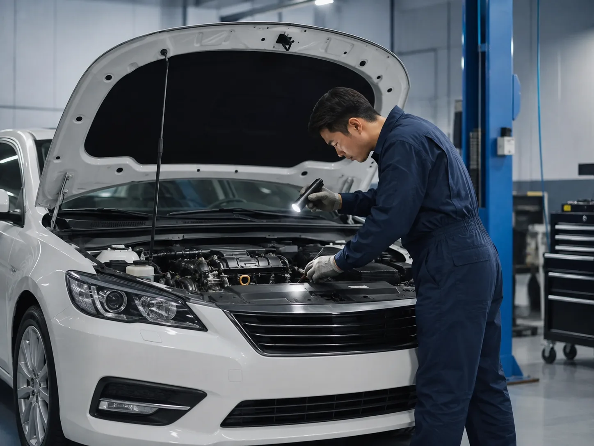

▲ 추석 연휴 귀성·귀경길에는 장거리 주행이 몰리는 만큼, 출발 전 차량 점검이 특히 중요하다
1. 현대차·기아 등 5개사, 2,749곳서 무상점검 실시
현대자동차·기아·한국지엠·르노코리아·KG모빌리티 등 국내 완성차 5개사가 추석 연휴를 앞두고 전국 2,749개소에서 무상점검 서비스를 실시한다. 참여 규모를 제작사별로 보면 현대자동차가 블루핸즈 1,203개소로 가장 많고, 기아는 오토큐 750개소, 한국지엠은 기술센터 3개소와 협력센터 372개소, 르노코리아는 직영센터 7개소와 협력센터 354개소, KG모빌리티는 직영센터 2개소와 협력센터 56개소에서 각각 점검을 진행한다.

▲ 정비사가 엔진룸 상태를 점검하는 모습. 추석 무상점검에서는 엔진과 각종 오일류 상태를 우선적으로 확인한다
2. 점검 항목 — 엔진부터 브레이크, 와이퍼까지
이번 무상점검에서는 장거리 주행 전 반드시 챙겨야 할 항목들을 폭넓게 다룬다. 구체적으로는 엔진과 공조장치 상태, 타이어 공기압과 마모 상태, 브레이크와 패드 마모도, 냉각수와 각종 오일류, 와이퍼와 퓨즈 상태 등이 무상으로 점검된다. 특히 타이어는 장거리 고속 주행 시 사고와 직결되는 부품인 만큼, 마모 상태와 공기압을 꼼꼼히 확인하는 것이 중요하다.
📍 귀성길 전 셀프 점검 팁
정비소 방문이 어렵다면 출발 전 최소한 타이어 공기압과 마모 상태, 워셔액·냉각수 잔량, 와이퍼 작동 여부 정도는 직접 확인하는 것이 좋다. 타이어는 동전을 트레드 홈에 꽂아 마모 한계선을 가늠해볼 수 있고, 장거리 운행 전에는 평소보다 공기압을 약간 높여주는 것도 도움이 된다. 냉각수 부족은 여름철 정체 구간에서 엔진 과열로 이어질 수 있어 특히 유의해야 한다.
3. 실시 기간 — 제작사별로 9월 17일부터 23일까지
무상점검은 제작사별로 9월 17일부터 23일 사이 3~5일간 나눠 진행된다. 현대자동차·기아·한국지엠·KG모빌리티는 9월 21일부터 23일까지 사흘간 점검을 실시하며, 르노코리아는 이보다 앞선 9월 17일부터 23일까지 평일 5일간 진행한다. 추석 연휴 직전 주말과 연휴 초입에 집중되는 일정인 만큼, 귀성길에 나서기 전 미리 방문 일정을 확인해두는 것이 좋다.
| 제작사 | 점검망 | 개소 수 | 실시 기간 |
|---|---|---|---|
| 현대자동차 | 블루핸즈 | 1,203개소 | 9.21~9.23 |
| 기아 | 오토큐 | 750개소 | 9.21~9.23 |
| 한국지엠 | 기술센터+협력센터 | 375개소 | 9.21~9.23 |
| 르노코리아 | 직영+협력센터 | 361개소 | 9.17~9.23(평일) |
| KG모빌리티 | 직영+협력센터 | 58개소 | 9.21~9.23 |

▲ 타이어 마모 한계선. 무상점검 항목 중에서도 장거리 주행 안전과 직결되는 핵심 확인 대상이다
4. 연휴 기간 긴급출동반도 상시 운영
참여한 5개사 모두 추석 연휴 기간 긴급출동반을 상시 운영해, 주행 중 고장이나 사고가 발생했을 때 신속하게 대응할 수 있도록 대비한다. 무상점검을 미리 받지 못했거나 연휴 중 예상치 못한 차량 문제가 발생하더라도, 제작사 콜센터를 통해 긴급출동 서비스를 요청할 수 있다. 고속도로 정체가 심한 연휴 특성상 견인이나 현장 조치까지 시간이 걸릴 수 있는 만큼, 출발 전 점검으로 문제를 미리 예방하는 편이 가장 확실한 대비책이다.

▲ 고속도로 휴게소. 장거리 귀성길에는 중간중간 휴게소에서 타이어 온도와 상태를 다시 한번 확인하는 것도 좋다
5. 왜 매년 추석마다 무상점검이 반복될까
추석 연휴는 한 해 중 손꼽히는 장거리 이동 성수기다. 평소 짧은 거리만 주행하던 차량도 이 시기에는 수백 킬로미터를 쉬지 않고 달리게 되는 경우가 많아, 평소 발견하지 못했던 정비 불량이 고속 주행 중 갑작스러운 고장으로 이어질 위험이 커진다. 특히 여름철 폭염을 지나며 배터리와 냉각계통에 부담이 누적된 상태에서 곧바로 장거리 운행에 나서는 경우가 많아, 완성차 업계는 매년 명절 연휴를 앞두고 이 같은 무상점검 캠페인을 정례적으로 진행하고 있다. 렉서스·토요타, 폭스바겐 등 수입차 업체들도 별도로 부품·공임 할인이 포함된 자체 점검 프로그램을 운영하고 있어, 국산차 오너뿐 아니라 수입차 오너들도 소속 브랜드의 점검 일정을 확인해볼 필요가 있다.
✅ 추석 무상점검, 이것만은 확인하세요
· 현대차·기아·한국지엠·르노코리아·KG모빌리티 등 5개사, 전국 2,749개소 참여
· 점검 항목은 엔진·공조장치, 타이어, 브레이크, 냉각수·오일류, 와이퍼·퓨즈 등
· 실시 기간은 제작사별로 9월 17일~23일 사이 3~5일간
· 연휴 내내 5개사 모두 긴급출동반 상시 운영
· 방문이 어려우면 최소 타이어·냉각수·와이퍼만이라도 출발 전 셀프 점검 권장
6. 정리
국내 완성차 5개사가 전국 2,749개소에서 실시하는 이번 추석 무상점검은, 매년 명절마다 반복되는 장거리 이동 성수기의 안전을 뒷받침하는 대표적인 서비스다. 점검 항목이 엔진부터 타이어, 브레이크까지 폭넓은 만큼 방문이 가능하다면 연휴 직전 주말을 활용해 점검을 받는 것이 안전한 귀성길의 첫걸음이 될 수 있다. 점검 시기를 놓쳤더라도 연휴 내내 운영되는 긴급출동반이 뒷받침되는 만큼, 무엇보다 출발 전 타이어와 냉각수 상태만이라도 스스로 챙겨보는 습관이 중요하다.